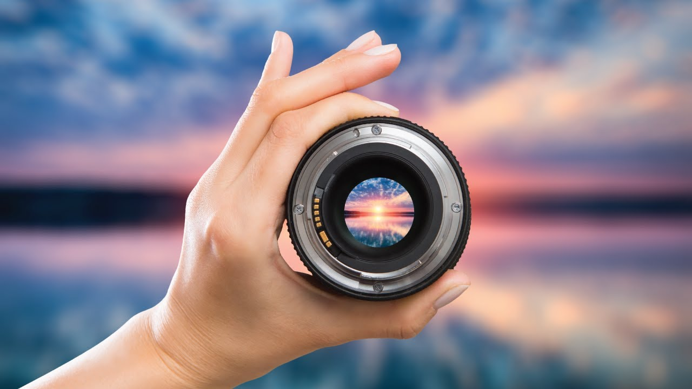
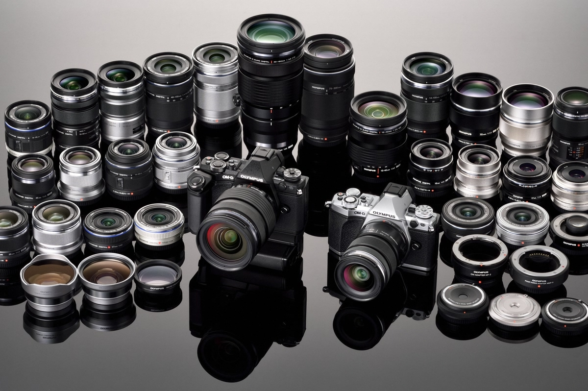
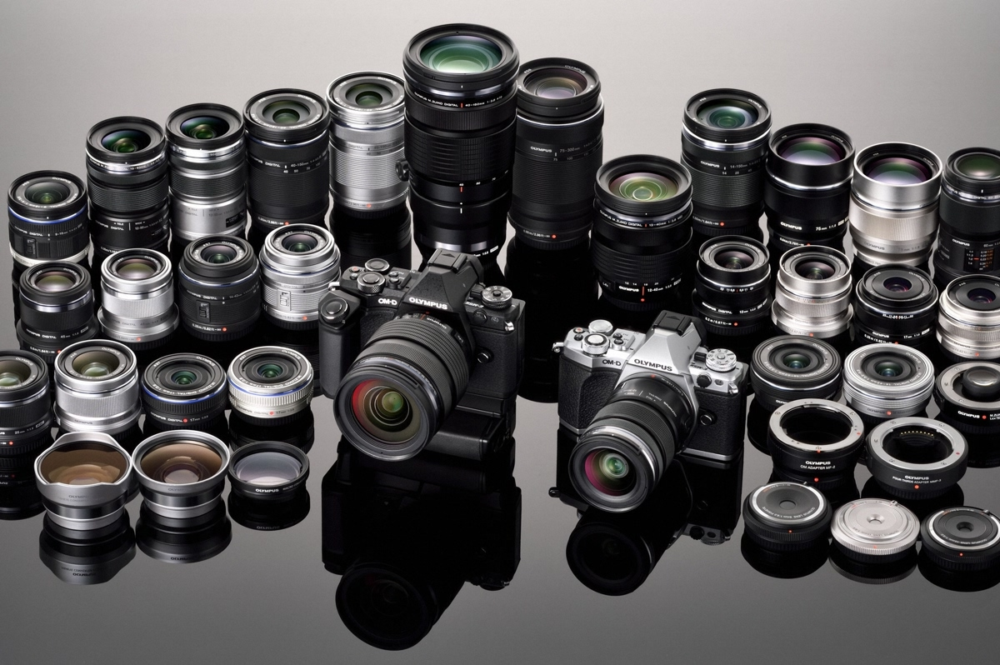

Наш завод был основан в 1999 году и с тех пор неизменно стремится к совершенству в производстве камер и объективов под брендом "View of Lens". Мы начали свой путь с небольшой команды энтузиастов, обладающих страстью к фотографии и стремящихся создавать выдающиеся оптические устройства.С каждым годом наши специалисты в области оптики и механики труда работали над инновационными решениями, принося на рынок продукцию высочайшего качества. Наш завод стал пионером в использовании передовых технологий, а вся наша продукция создается с учетом самых актуальных потребностей фотографов и профессионалов в области изображений."View of Lens" превратился в синоним надежности и качества в мире оптики. Мы гордимся тем, что наши объективы воплощают в себе уникальное сочетание традиций ремесла и передовых технологий. Каждая камера, каждый объектив, проходят строгий контроль качества, чтобы обеспечить нашим клиентам непревзойденный опыт в области фотографии. Сегодня наш завод "View of Lens" остается лидером в индустрии, поставляя инновационные и высокотехнологичные продукты по всему миру. Наша история — это история стремления к совершенству, вдохновляя фотографов создавать неповторимые моменты и сохранять воспоминания на долгие годы.
Сегодня наш завод "View of Lens" остается лидером в индустрии, поставляя инновационные и высокотехнологичные продукты по всему миру. Наша история — это история стремления к совершенству, вдохновляя фотографов создавать неповторимые моменты и сохранять воспоминания на долгие годы.